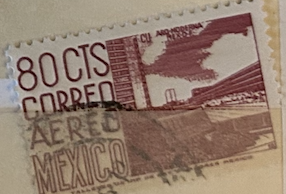
| SOURCE | TITLE| IMAGE MATCH | click to source page |
| eBay | Mexico 1950 airmail stamp | eBay | 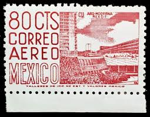 |
| eBay | pa066b Mexico Arquite MNH paper 2 Sc#C265a Mc#1029llA Et#aa066b carmine-lilac | eBay | 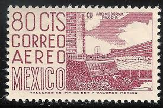 |
| Dreamstime.com | MEXICO - CIRCA 1963: a Stamp Printed in Mexico Shows New Sports Center at the University City, Mexico City, Circa 1963. Editorial Photography - Image of hobby, philately: 169100077 | 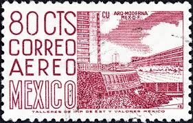 |
| Todocolección | sl) 1984 mexico christmas mnh - Buy Antique stamps of Mexico on todocoleccion | 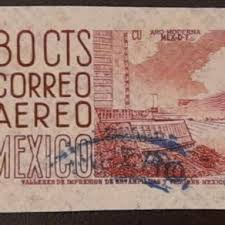 |
| Pngtree | Mexican Stamp Depicting Pistol Shooting At The 1968 Mexico Olympics Xix Olympiad Photo Background And Picture For Free Download - Pngtree | 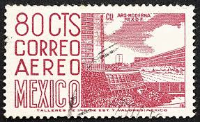 |
| eBay | Mexico C266b strip/5, MNH. Michel 1029-IIC. Mexico City University, 1963. | eBay | 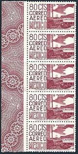 |
| Alamy | MEXICO - CIRCA 1951: a stamp printed in Mexico shows Queretaro, architecture, circa 1951 Stock Photo - Alamy | 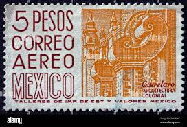 |
| Gregg Nelson Stamps | C266 Mexico 1950 Var Issues - Gregg Nelson Stamps | 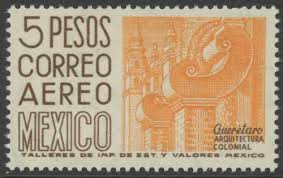 |
| Alamy | MOSCOW, RUSSIA - MARCH 26, 2022: Postage stamp printed in Mexico shows Miguel Hidalgo, Local Images serie, circa 1975 Stock Photo - Alamy |  |
| eBay | Mexico stamp #C298, used, wmk. 350 | eBay | 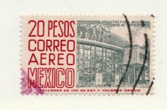 |
| eBay | MEXICO Sc# C217 Mint. VLH VF Top Value WMK 300 | eBay | 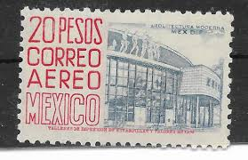 |
| eBay | pa139 Mexico Arquite MNH paper 4 Sc#C268 Mc#1033Cy Et#aa139 | eBay | 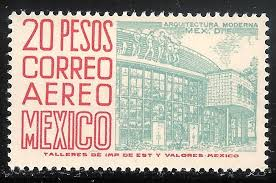 |
| eBay | MEXICO 1965 AEROS SCOTT C220H TYPE ONE MNH. | eBay | 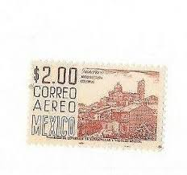 |
| eBay | pa209a Mexico Arquite MNH paper 8 Sc#C266 Mc#1031Cz Et#aa209a ochre-brown | eBay | 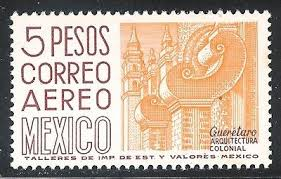 |
| Alamy | Michoacan stamp hi-res stock photography and images - Alamy |  |
| eBay | pa178 Mexico Arquite MNH paper 6 Sc#C268 Mc#1033Cz Et#aa178 | eBay | 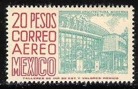 |
| Shutterstock | 1+ Thousand Old Mexico Postcards Royalty-Free Images, Stock Photos & Pictures | Shutterstock | 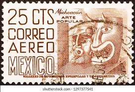 |
| Dreamstime.com | 1960 Mexico 50 Centavos "Mayan Relief from Chiapas" Used Stamp Editorial Stock Image - Image of textile, stamp: 414179814 |  |
| lastdodo.com | Colonial architecture 5 (1966) - Mexico - LastDodo | 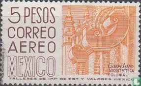 |
| eBay | Mexico C296, MNH. Michel 1160-II. Air Post 1966. Queretaro, architecture. | eBay | 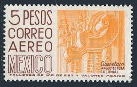 |
| Gregg Nelson Stamps | C220EVAR Mexico Air Mail Issues - Gregg Nelson Stamps | 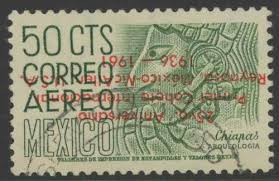 |
| eBay | Mexico #C298 mint hinged wmk 350 e203 7305 | eBay | 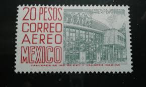 |
| eBay | Mexico #C198a used wmk 279 e203 7293 | eBay | 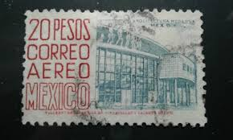 |
| eBay | Mexico stamp C265/265a/265b/265c MH | eBay | 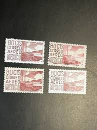 |
| eBay | pa076 Mexico Arquite MNH paper 2 Sc#C266 Mc#1031Cx Et#aa076 perf14 plate 3 | eBay | 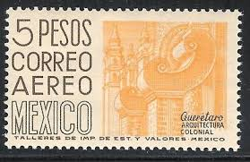 |
| Mexperience | Remembering Delivery Workers on Postman's Day in Mexico |  |
| eBay | etiangui Transparent Perforation Gauge ( Odontometer ) | eBay | 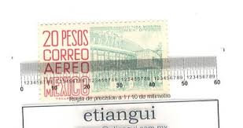 |
| Shutterstock | 32 Guerrero Stamp Royalty-Free Images, Stock Photos & Pictures | Shutterstock |  |
| eBay | Stamps Latin America Mexico Set of 4 1950-52 80c Airmail Modern Architecture | eBay | 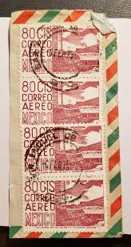 |
| eBay | pa152 Mexico Arquite MNH paper 5 Sc#C287 Mc#C1158y Et#aa152 | eBay |  |
| iStock | Mexican Michoacan Masks On A Postage Stamp Stock Photo - Download Image Now - Mexico, Ancient, Postage Stamp - iStock | 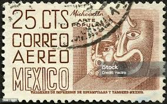 |
| sdnc.ca | LATIN AMERICAN STAMPS | 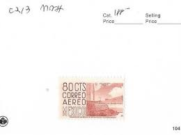 |
| eBay | Used Postage Mexican Stamps for sale | eBay | 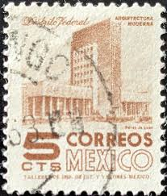 |
| Todocolección | mexico,1962* vista de taxco, guerrero, yvert 22 - Buy Antique stamps of Mexico on todocoleccion | 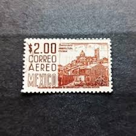 |
| Shutterstock | Correos De Mexico: Over 4,894 Royalty-Free Licensable Stock Photos | Shutterstock | 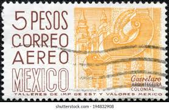 |
| sellosmundo.com | Airmail. . Mexico America ref. 335482 | 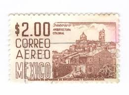 |
| HipStamp | Mexico # C193 - Chiapas - used | Central & South America - Mexico, Air Mail Stamp / HipStamp | 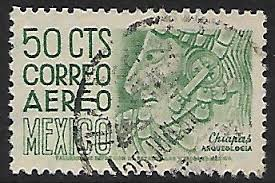 |
| Dreamstime.com | Chiapas Stamp Stock Photos - Free & Royalty-Free Stock Photos from Dreamstime |  |
| eBay | Mexico SC C266 Block of 4 MNH (7fbd) | eBay | 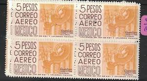 |
| Dreamstime.com | 1,204 Vintage Mexico Stamp Stock Photos - Free & Royalty-Free Stock Photos from Dreamstime | 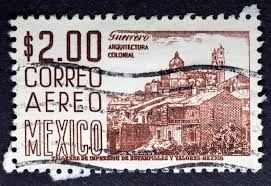 |
| iStock | Mayan Sculpture Stock Photo - Download Image Now - Mexico, Ancient Civilization, Archaeology - iStock | 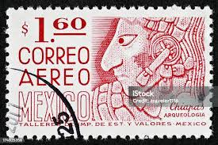 |
| Todocolección | méxico 1975 identidad mexicana. usado. - Buy Antique stamps of Mexico on todocoleccion | 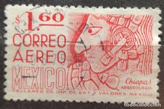 |
| eBay | Mexico C220k perf 11.5x11 Bl/4,MNH.Mi 1023Ax. Air Post 1960.Chiapas musicians. | eBay | 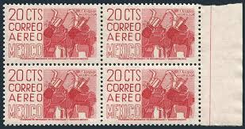 |
| eBay | pa113 Mexico Arquite MNH paper 3 Sc#C296 Mc#1160Xx Et#aa113 | eBay | 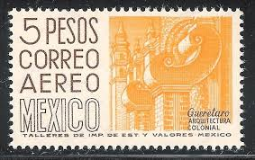 |
| HipStamp | Mexico C193 50c Chiapas 1950-52 used | Central & South America - Mexico, Air Mail Stamp / HipStamp | 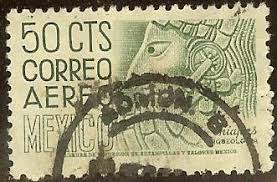 |
| eBay | See Photos. Mexico stamp C268 | eBay | 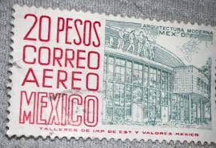 |
| eBay | Mexico C296, used. Michel 1160-IIXx. Queretaro, architecture, 1966. | eBay | 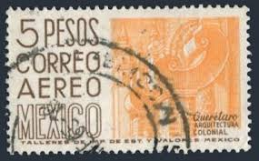 |
| Todocolección | mexico.- guerrero: arquitectura colonial.- (3) - Buy Antique stamps of Mexico on todocoleccion | 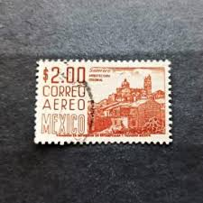 |
| Shutterstock | Mexico Circa 1963 Stamp Printed Mexico Stock Photo 88678837 | Shutterstock | 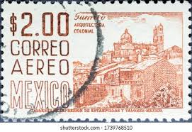 |
| eBay | pa075c Mexico Arquite Used paper 2 Sc#C215 Mc#1031A Et#aa075c orange-yellow | eBay | 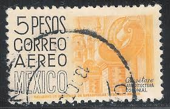 |
| eBay | Mexico Scott# C265b 80c Serie Corner Margin Block of 4 MNH | eBay | 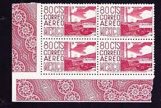 |
| Coins NB | 20 Pesos 1977 (UNC) - Mexico | Coins NB - Auction - CoinsNB E-Auction | 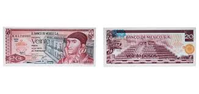 |
| eBay | pa023 Mexico Arquite MNH paper 1 Sc#C196 Mc#989 Et#aa023 orange-red | eBay | 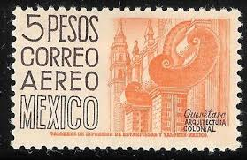 |
| Alamy | Postage stamp mexico hi-res stock photography and images - Page 8 - Alamy | 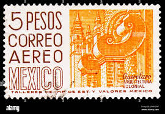 |
| HipStamp | MEXICO Sc# C285 MNH FVF 4Block Chiapas | Central & South America - Mexico, Air Mail Stamp / HipStamp | 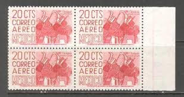 |
| Palm Island Coins and Currency | 1973-77 Mexico 20 Pesos “Jose Maria Morales / Pyramid of Teotihuacan” | Palm Island | 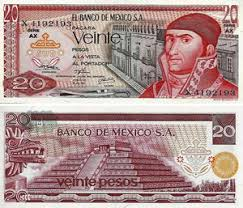 |
| Souvenir Card Collectors Society | Souvenir Card Collectors Society | |
| Todocolección | sd)1963 mexico centenary of the red cross, palo - Buy Antique stamps of Mexico on todocoleccion | |
| eBay | 1972 Mexico Banknote 20 Pesos UNC Paper Money J. Morelos SERIE S Prefix S SCARCE | eBay |